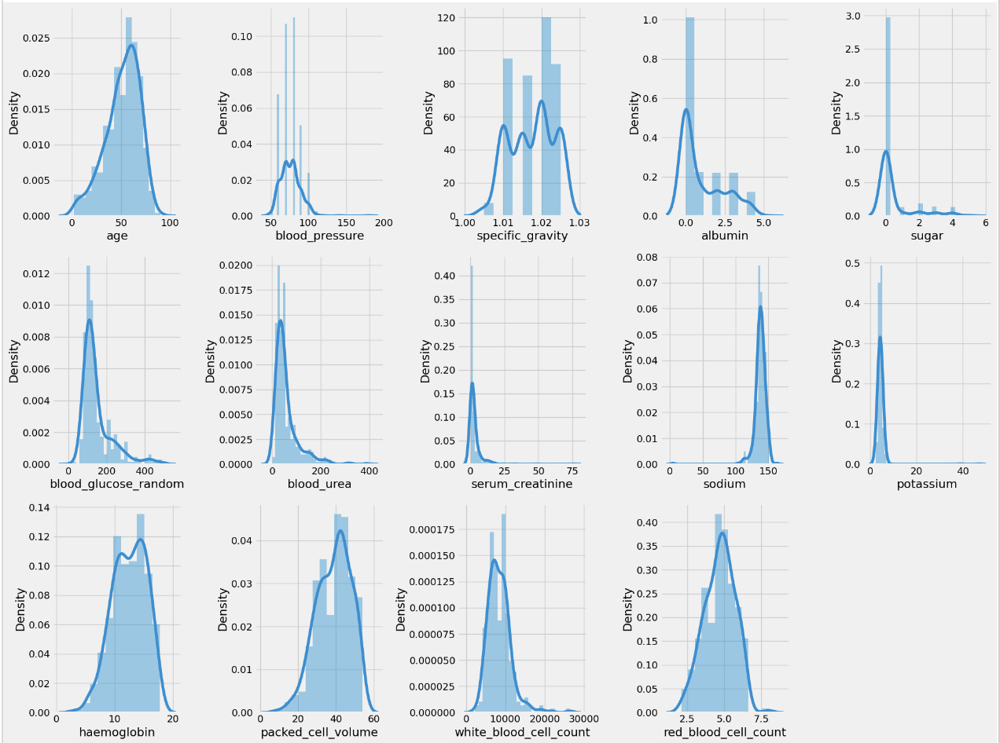

Generic Page

Análisis de datos
1- Importar librerias
Para esta demostracióon estaremos utilizando Python, por lo tanto debemos de importar las librerias que vamos a utilizar para analizar y visualizar los datos.
import pandas as pd
import numpy as np
from sklearn.preprocessing import LabelEncoder
import matplotlib.pyplot as plt
import seaborn as sns
import plotly.express as px
from scipy.io import arff
from sklearn.impute import KNNImputer
import warnings
warnings.filterwarnings('ignore')
plt.style.use('fivethirtyeight')
%matplotlib inline
pd.set_option('display.max_columns', 26)
2- Cargar dataset
Cargamos el dataset con la librerias de pandas desde un archivo .csv en un dataframe. Luego visualizamos los primeros datos del dataset para visualizar que son los correctos.
df= pd.read_csv('/content/drive/MyDrive/UCU/IA 1/kidney_disease.csv')
df.head()
Eliminamos la columna de "id" ya que no es relevante para esta predicción
df.drop('id', axis = 1, inplace = True)
Con el metodos .describe() podemos visualizar los valores como suma, media, min y max, etc para cada una de las columnas. Esto sirve para tener una idea mejor sobre los datos que tenemos y cuanto debemos tratarlos.
df.describe()
Para una mejor comprensión de los datos, decidí cambiarles los nombres de cada columna, por sus nombre completo, en vez de abreviatura.
df.columns = ['age', 'blood_pressure', 'specific_gravity', 'albumin', 'sugar', 'red_blood_cells', 'pus_cell',
'pus_cell_clumps', 'bacteria', 'blood_glucose_random', 'blood_urea', 'serum_creatinine', 'sodium',
'potassium', 'haemoglobin', 'packed_cell_volume', 'white_blood_cell_count', 'red_blood_cell_count',
'hypertension', 'diabetes_mellitus', 'coronary_artery_disease', 'appetite', 'peda_edema',
'aanemia', 'classification']
Con el metodo .info() podemos conocer el tipo que tiene cada columna. Podemos ver que hay tres columnas: 'packed_cell_volume', 'white_blood_cell_count' y 'red_blood_cell_count' que tienen valores de tipo object pero son numericos.
df.info()
Cambiamos los tipos de las columnas de object a numeric:
df['packed_cell_volume'] = pd.to_numeric(df['packed_cell_volume'], errors='coerce')
df['white_blood_cell_count'] = pd.to_numeric(df['white_blood_cell_count'], errors='coerce')
df['red_blood_cell_count'] = pd.to_numeric(df['red_blood_cell_count'], errors='coerce')
Para poder visualizar mejor los datos numericos y categóricos, separamos en dos variables las columnas que son de tipo object y las que no:
cat_cols = [col for col in df.columns if df[col].dtype == 'object']
num_cols = [col for col in df.columns if df[col].dtype != 'object']
Vemos los valores únicos que hay en cada atributo de tipo categórico. Verificamos que sean los correctos con respecto a la información del dataset, brindada anteriormente.
for col in cat_cols:
print(f"{col} has {df[col].unique()} values\n")
Corregimos los valores incorrectos encontrados en las diferentes columnas. En este caso podemos ver que, los valores incorrectos encontrados son typos o cosas que al leer el dataset quedaron mal.
df['diabetes_mellitus'].replace(to_replace = {'\tno':'no','\tyes':'yes',' yes':'yes'},inplace=True)
df['coronary_artery_disease'] = df['coronary_artery_disease'].replace(to_replace = '\tno', value='no')
df['classification'] = df['classification'].replace(to_replace = {'ckd\t': 'ckd'})
Distribución de los atributos númericos
Para visualizar las distribuciones de estos atributos utilizamos las siguientes funciones, que nos muestras los graficos de la ditribucion de los datos:
plt.figure(figsize = (20, 15)) plotnumber = 1 for column in num_cols: if plotnumber <= 14: ax = plt.subplot(3, 5, plotnumber) sns.distplot(df[column]) plt.xlabel(column) plotnumber += 1 plt.tight_layout() plt.show()
Valores faltantes
Necesitamos chequear si el dataset tiene valores faltantes, ya que estos pueden afectar en el rendimiento de los algoritmos utilizados para la prediccón. Según la cantidad de valores faltantes en cada columna, se debe de decidir que método utilizar para arreglarlos.
print(df.isnull().sum())
En este caso utilizaré el KNNImputer. Este identificca los valores faltantes y los reemplaza utilizando el algoritmo "KNN" o el "algoritmo del vecino más cercano". Este utiliza la proximidad para clasificar que valor es el correcpondiente para esa variable. Pero primero debemos de pasar las variables categóricas a númericas, en este caso es posible ya que todas las categóricas tienen solo dos valores posibles.
from sklearn.preprocessing import LabelEncoder
le = LabelEncoder()
for col in cat_cols:
df[col] = le.fit_transform(df[col])
Ahora si reemplazamos los valores faltantes con el algortimos de KNN. Posterior a reemplazar los valores debemos de convertir el resultado a un DataFrame de pandas como estabamos utilzando previamente y agregarle los nombres a las columnas, ya que el método imputer.fit_transform() nos devuelve un array.
imputer = KNNImputer(n_neighbors=5,weights='uniform', metric='nan_euclidean')
df = imputer.fit_transform(df)
df = pd.DataFrame(df)
df.columns = ['age', 'blood_pressure', 'specific_gravity', 'albumin', 'sugar', 'red_blood_cells', 'pus_cell',
'pus_cell_clumps', 'bacteria', 'blood_glucose_random', 'blood_urea', 'serum_creatinine', 'sodium',
'potassium', 'haemoglobin', 'packed_cell_volume', 'white_blood_cell_count', 'red_blood_cell_count',
'hypertension', 'diabetes_mellitus', 'coronary_artery_disease', 'appetite', 'peda_edema',
'aanemia', 'classification']
df.head()
Creación del Modelo
Primero debemos de separar el dataset en un set de entrenamiento y un set de testing.
ind_col = [col for col in df.columns if col != 'classification']
dep_col = 'classification'
X = df[ind_col]
y = df[dep_col]
# splitting data intp training and test set
from sklearn.model_selection import train_test_split
X_train, X_test, y_train, y_test = train_test_split(X, y, test_size = 0.30, random_state = 0)
KNN
from sklearn.neighbors import KNeighborsClassifier
from sklearn.metrics import accuracy_score, confusion_matrix, classification_report
knn = KNeighborsClassifier()
knn.fit(X_train, y_train)
# accuracy score, confusion matrix and classification report of knn
knn_acc = accuracy_score(y_test, knn.predict(X_test))
print(f"Training Accuracy of KNN is {accuracy_score(y_train, knn.predict(X_train))}")
print(f"Test Accuracy of KNN is {knn_acc} \n")
print(f"Confusion Matrix :- \n{confusion_matrix(y_test, knn.predict(X_test))}\n")
print(f"Classification Report :- \n {classification_report(y_test, knn.pred
Random Forest
from sklearn.ensemble import RandomForestClassifier
rd_clf = RandomForestClassifier(criterion = 'entropy', max_depth = 11, max_features = 'auto', min_samples_leaf = 2, min_samples_split = 3, n_estimators = 130)
rd_clf.fit(X_train, y_train)
# accuracy score, confusion matrix and classification report of random forest
rd_clf_acc = accuracy_score(y_test, rd_clf.predict(X_test))
print(f"Training Accuracy of Random Forest Classifier is {accuracy_score(y_train, rd_clf.predict(X_train))}")
print(f"Test Accuracy of Random Forest Classifier is {rd_clf_acc} \n")
print(f"Confusion Matrix :- \n{confusion_matrix(y_test, rd_clf.predict(X_test))}\n")
print(f"Classification Report :- \n {classification_report(y_test, rd_clf.predict(X_test))}")
models = pd.DataFrame({
'Model' : [ 'KNN', 'Random Forest Classifier'],
'Score' : [knn_acc, rd_clf_acc]
})
models.sort_values(by = 'Score', ascending = False)
px.bar(data_frame = models, x = 'Score', y = 'Model', color = 'Score',
title = 'Models Comparison')